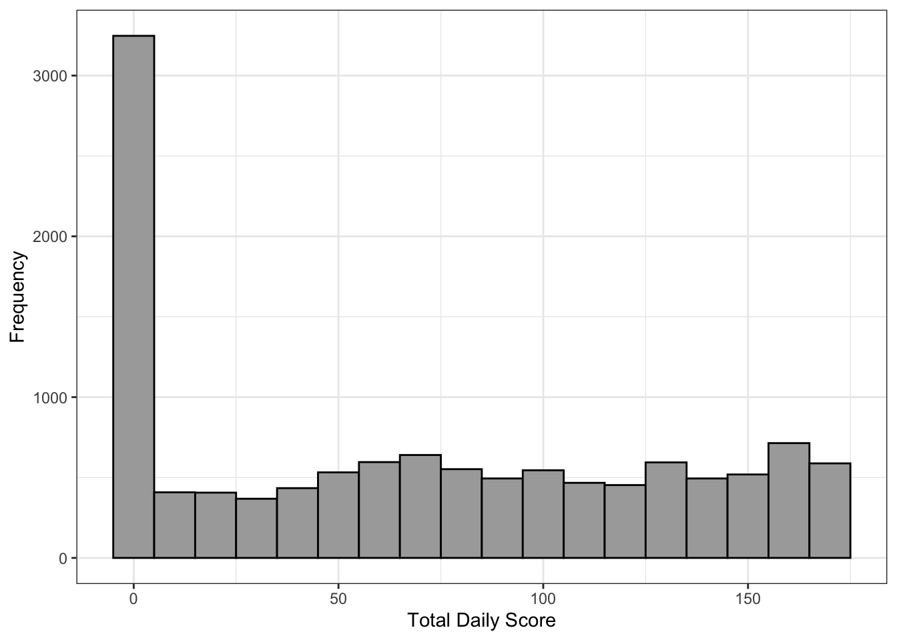
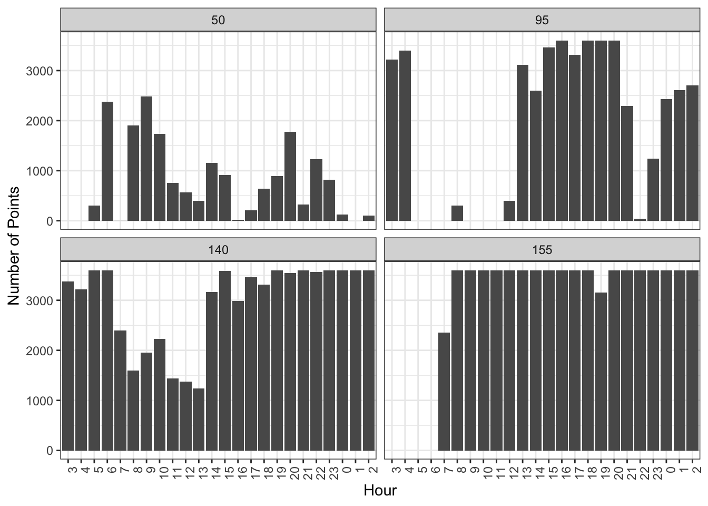
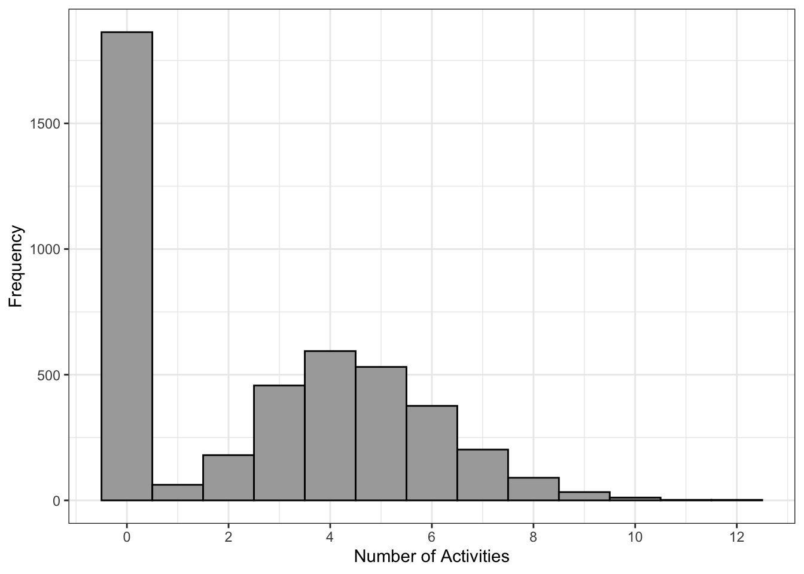
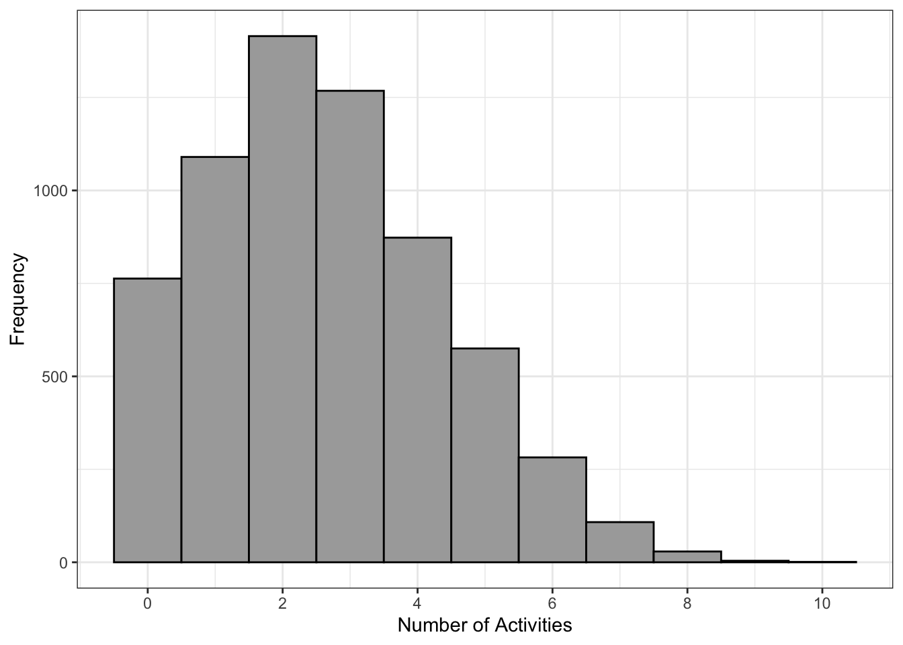

| Mean | Std. Dev. | Mean | Std. Dev. | Mean | Std. Dev. | ||
|---|---|---|---|---|---|---|---|
| Age | 22.8 | 2.7 | 25.9 | 4.9 | 22.8 | 2.3 | |
| IQ | 120.2 | 12.0 | 122.6 | 14.1 | 119.7 | 11.4 | |
| N | Pct. | N | Pct. | N | Pct. | ||
| Sex | Female | 23 | 74.2 | 20 | 69.0 | 22 | 78.6 |
| Male | 8 | 25.8 | 9 | 31.0 | 6 | 21.4 | |
| Race | White | 25 | 80.6 | 26 | 89.7 | 27 | 96.4 |
| Asian | 0 | 0.0 | 2 | 6.9 | 0 | 0.0 | |
| Hispanic or Latino | 6 | 19.4 | 1 | 3.4 | 1 | 3.6 |
3 Methodology
Keywords
travel behavior, mental health, motivation, suicidality, activity types, DBSCAN-TE
To explore the relationship between travel behavior and mental health, the data was cleaned, processed, and analyzed. This involved assessing data quality, ensuring integrity, and using the DBSCAN-TE algorithm to identify activities. Various statistical models were then applied to examine the connection between travel behavior and mental health. This section outlines the research methods used to study the correlation between travel behavior and mental health in young adults with suicidal ideation.
3.1 Study Data
This research analyzed a unique dataset of 88 young adults in Utah County who expressed suicidal ideation in therapy, as part of a study conducted by Brigham Young University’s (BYU) Counseling and Psychology Services (CAPS). Participants were divided into four groups based on psychological evaluation: autism, social anxiety, control, or no group. The no-group participants initially believed they belonged to the autism or social anxiety groups, but after evaluation, they were reclassified and combined with the control group. The study included 28 individuals in the social anxiety group, 29 in the autism group, and 31 in the control group. Descriptive statistics such as age, IQ, sex, and race are provided in Table 3.1. The average participant was 23.8 years old, with an average IQ of 120.8, and the autism group had the highest average age and IQ. The sample included 65 individuals assigned female at birth and 23 assigned male at birth, with a similar gender distribution across the groups. Most participants were White, but Hispanic or Latino and Asian individuals were also represented.
Participants installed an app on their phones that collected cellular LBS data, with some providing data for one month and others up to a year. There was a one-month gap when no LBS data was collected. In addition to LBS data, the app prompted participants to complete mental health surveys in the mornings and evenings, asking questions like, “Have you felt stressed since your last survey?” “How would you gauge your motivation?” and “Have you thought about killing yourself in the past 12 hours?” Participants were monetarily incentivized to complete the surveys.
By integrating LBS data and survey responses, we can analyze the interaction between travel behavior and mental health, especially in relation to the three groups. Before proceeding with the analysis, we cleaned and processed the data.
3.2 Cleaning the Data
The raw LBS data included each participant’s ID (userID), timestamp (date and time), and location coordinates (latitude and longitude). The first step in data cleaning was to prepare the raw LBS data for further analysis by determining the activity day, applying a scoring algorithm, and refining the dataset.
To capture daily travel patterns more accurately, we shifted the traditional 24-hour period (typically ending at 11:59 PM) to span from 3:00 AM to 2:59 AM. This adjustment ensured that any data points between 12:00 AM and 2:59 AM were classified as part of the previous day’s travel activities. The data from this adjusted 24-hour window became the “activity day.” Since the evening mental health survey closed at 3:00 AM, any surveys taken between 12:00 AM and 3:00 AM were linked to the preceding activity day, aligning travel and mental health data accordingly.
After establishing activity days and categorizing data points, we evaluated the quality and completeness of the LBS data for each combination of userID and activity day. In total, there were 12,051 userID-activity days with varying data quality. To assess this, the data was grouped by userID, activity day, and hour of the day, and a scoring algorithm was applied. This algorithm identified userID-activity days that have a high score, indicating a sufficient quantity and distribution of LBS data points. The scoring mechanism is based on two factors: the hour of the day and the number of LBS points recorded in that hour. For hours between 8:00 AM and 11:59 PM—when significant activity was more likely—a score of 3 was assigned, while for all other hours, a score of 1 was assigned. This aspect of the scoring algorithm is described in Equation 3.1 where \(H_t\) is the hourly score and \(t\) is the hour of the day \[ H_t = \begin{cases} 3 & \text{if } 8 \leq t \leq 23 \\ 1 & \text{otherwise} \end{cases} \tag{3.1}\]
The algorithm also adjusted the overall score based on the number of LBS points recorded within each hour, categorizing each hour into tiers and assigning corresponding scores. The tiers were defined as follows: hours with fewer than 500 points received a score of 0; hours with 500 to 1500 points received a score of 1; hours with 1500 to 2500 points received a score of 2; and hours with over 2500 points received a score of 3. This aspect of the scoring algorithm is described in Equation 3.2 where \(P_t\) is the hourly LBS score and where \(LBS_t\) is the number of LBS points in that hour \[ P_t = \begin{cases} 0 & \text{if } \text{LBS}_t < 500 \\ 1 & \text{if } 500 \leq \text{LBS}_t < 1500 \\ 2 & \text{if } 1500 \leq \text{LBS}_t < 2500 \\ 3 & \text{if } \text{LBS}_t \geq 2500 \end{cases} \tag{3.2}\]
To determine the combined score for each hour, the score based on the hour of the day and the score based on the number of LBS points were multiplied together. Equation 3.3 describes this step and \(S_t\) is the combined score for the given hour \[ S_t = H_t \times P_t \tag{3.3}\]
Then to determine the final score of the activity day, the scores for each hour of the day were summed to determine the total daily score for the activity day. Equation 3.4 shows this step in the calculation and \(S_{\text{day}}\) is the total daily score. The \(S_{\text{day}}\) is for the activity day which is from 3:00 AM to 2:59 AM, as previously described \[ S_{\text{day}} = \sum_{t=3}^{2} S_t \tag{3.4}\]
The scoring algorithm assigned a maximum possible score of 168 points for an activity day. By summing the daily scores and selecting high-scoring days, the algorithm provided a comprehensive assessment of the quality of LBS points for each userID-activity day combination. A “high scoring” day was defined as having a score of 95 points or more, ensuring that only sufficiently complete and accurate data was retained for further analysis of participants’ trip patterns.
Figure 3.1 shows the distribution of daily scores across all userID-activity days, with an average total daily score of around 70 points, just below the midpoint of the possible score range of 84 points. Notably, 2,965 of the 12,051 userID-activity days had a total score of 0, indicating sporadic and incomplete data collection. The effectiveness of the scoring algorithm in identifying low-quality data highlights its value for data sorting and quality assessment. After applying the 95-point threshold, 4,405 out of 12,051 userID-activity days were retained, meaning approximately 37% had LBS data of sufficient quality for analysis.

To illustrate the quality of LBS data, we plotted the number of LBS points for four random userID-activity days by hour, as shown in Figure 3.2. This visualization, combined with the scores from the algorithm, provides valuable insights into data quality assessment. These randomly selected days showcase the spectrum of data quality within our LBS dataset.

After determining the activity days and identifying high-scoring userID-activity days, we streamlined the LBS data by reducing redundancy. The data collection application recorded an LBS data point every second, so we extracted a random sample of 6 LBS points per minute for each high-scoring userID-activity day. This sampling approach was consistent with the optimization used in the DBSCAN-TE algorithm, described in the following section (Macfarlane et al., 2024).
The data cleaning process involved essential steps to ensure dataset quality and integrity. We shifted the 24-hour period to 3:00 AM to 2:59 AM, capturing daily travel more accurately, particularly for activities occurring after midnight. This adjustment aligned with the evening mental health survey closing at 3:00 AM, ensuring consistency in activity day association. We then implemented a scoring algorithm to evaluate the quality and completeness of the LBS data for each userID-activity day combination. High-scoring days, defined as those with scores of 95 points or more, were retained for analysis, leading to a 63% reduction in userID-activity days. These measures refined the dataset, preparing it for subsequent analysis of individual travel behavior and its relationship with mental health outcomes.
3.3 Processing the Data
After preparing the data, we identified 4,405 userID-activity days with sufficient information to implement the DBSCAN-TE algorithm for determining activity locations. This algorithm classifies daily activities by grouping closely packed points into clusters and labeling those clusters as activity locations. The DBSCAN-TE algorithm uses four parameters, which were optimized and applied to the LBS data to identify activity locations for each userID-activity day (Macfarlane et al., 2024; Riches, 2022). Although it was only applied to high-scoring userID-activity days, results were produced for 3,845 out of the 4,405 days.
Once all activity locations were identified, we calculated the total number of activities for each userID-activity day. The distribution of the number of activities for the 3,845 userID-activity days is shown in Figure 3.3, with an average of 2.65 activities engaged in each day.

In addition to calculating the total number of activities for each userID-activity day, we identified activities that occurred at four specific location types: parks, grocery stores, libraries, and social recreation sites. Using OpenStreetMap data, we created GeoJSON shapefiles for these locations in Utah County and overlaid them with the spatial geometry of activities to determine the number of activities at each specific location type.
To enhance dataset completeness, we executed an imputation procedure to address missing activity data on certain days, which could result from data collection gaps or quality issues. This process aimed to better align the activity data with completed mental health surveys. Using rolling averages, we estimated missing activity data over various time windows (seven, 14, and 30 days) to capture activity trends. This imputation was applied to total activities and separately for distinct activity types (e.g., parks, grocery stores, libraries, social recreation locations) to account for variations in activity patterns.
After applying the rolling averages, we identified 5,673 userID-activity days for the seven-day rolling average, 6,252 for the 14-day rolling average, and 7,130 for the 30-day rolling average.
Figure 3.4 show the distribution of activities for the seven-day rolling average, as an example.

By calculating rolling averages and imputing missing activity data, the imputation algorithm enhanced the dataset’s completeness and reliability, thereby facilitating more robust analyses of activity patterns and their associations with mental health outcomes.
3.4 Additional Travel Parameters
In addition to analyzing the number of activities and their locations, we analyzed other parameters to describe the travel patterns of individuals. These parameters were included because while the accuracy of the DBSCAN-TE algorithm in identifying activities is 91.5% accurate, it is not 100% accurate (Riches, 2022). We noticed some inaccuracy when we examined some of the raw LBS data. Instances appeared where activities seemed apparent but went undetected by the algorithm. These discrepancies prompted a deeper investigation into additional parameters that might shed light on daily travel patterns. However, after analyzing these parameters, we concluded that the DBSCAN-TE algorithm yielded sufficiently robust results, and the additional parameters did not provide any significant new insights.
3.5 Statistical Modeling
We combined semantic activities, travel pattern parameters, and survey responses to create statistical models that explore the relationship between mental health and travel behavior. Using motivation as an indicator of overall mental health and well-being, we analyzed how various factors influenced motivation, as represented in Equation 3.5 \[ \text{Motivation}_{it} \; \tilde{} \; \beta (\vec{X}_{it}) \tag{3.5}\]
We examined a range of models using various variables related to the individuals and their travel behavior. These variables are outlined in Equation 3.6 \[ X = \begin{cases} \text{individual descriptors}_i \\ \text{number of activities}_{it} \\ \text{avg. number of activities}_{i(t-t_7)} \\ \text{activity locations}_{it} \\ \end{cases} \tag{3.6}\]
For our analysis, we analyzed an ordinary least squares (OLS) model, fixed effects (FE) model, and random effects (RE) model to determine which was the best fit for our data (Wooldridge, 2009). For all three models, the motivation, as reported in the evening surveys on a scale from 0-100, served as the dependent variable. Participants used a drag bar to indicate their motivation on the evening survey, with prompts provided: “0-19 None at all or little motivation”, “20-39 Enough motivation to get by”, “40-59 Typical motivation”, “60-79 Plenty of motivation”, and “80-100 Unusually high motivation feeling hyper or even agitated at times”. The level of motivation was used as a measure for overall well-being. Additionally, the seven-day rolling average number of activities, as described previously, served as the independent variable for the models. In addition to the model analysis, we accounted for the potential for heteroskedasticity and autocorrelation in the selected models.
3.5.1 Ordinary Least Squares
Daily motivation levels were considered as a function of the seven-day rolling average number of activities described in the previous sections. Using these parameters, a linear regression model was estimated by OLS. Equation 3.7 shows the base OLS equation where \(\alpha_{i}\) represents the fixed effects in the model, or the time invariant variables \[ \text{Motivation} = \alpha_{i} + \beta (\text{sev-day avg. no. of acts.}_{it}) + \mu_{it} \tag{3.7}\] For linear regressions, it is assumed that the error terms are independently and identically distributed (IID) with a normal distribution of mean 0. The estimates resulting from this model may be inconsistent due to unobserved individual differences (violating the IID assumption). For example, all individuals have a different baseline or typical level of motivation. We want to account for changes in motivation by individual to see how their motivation deviates from its baseline. There are two common econometric techniques, known as FE and RE, that attempt to account for these baseline measures, which are discussed in the following sections.
3.5.2 Fixed Effects
The FE model, also called the within transformation, demeans the data by participant and looks at each participant’s levels of motivation and seven-day rolling average number of activities individually. This results in having different intercepts for each participant. Equation 3.8 shows the base equation for the FE model \[ y_{it} - \bar{y}_i = \beta ( x_{it} - \bar{x}_i ) + \mu_{it} -\bar{\mu}_i \tag{3.8}\] Since \(\alpha_i\) from the OLS model is fixed overtime, these unobserved effects disappear in the FE model. In this case, the time constant characteristics are the demographic characteristics of each participant. These variables are absorbed by the intercept as they are unique to each participant.
The FE model is consistent but less efficient because it results in losing degrees of freedom to estimate individual intercepts for each participant. This results in larger standard errors for the estimates which can make it more difficult to recognize significance.
3.5.3 Random Effects
The RE model semi-demeans the data by participant. Based on a mean for the entire group, a mean is determined with a set standard deviation to represent the data of the entire group. The RE model assumes that \(\alpha_i\), the unobserved effect, is uncorrelated with the seven-day rolling average number of activities. \(\lambda\) represents a “transformation that eliminates serial correlation in the errors” (Wooldridge, 2009, pg. 490). Equation 3.9 shows the base equation for the RE model \[ y_{it}-\lambda\bar{y}_i = \beta_0(1-\lambda)+\beta_1 ( x_{it1}-\lambda\bar{x}_{i1})+...+\beta_k (x_{itk}-\lambda\bar{x}_{ik})+(\nu_{it}-\lambda\bar{\nu}_i) \tag{3.9}\]
The RE model is appropriate to use if it is believed that the difference in motivation has an influence on the seven-day rolling average number of activities. It is possible that other variables that influence the seven-day rolling average number of activities are not included which can lead to bias in the model. Unlike the FE model, the RE model is more efficient because degrees of freedom are not lost to more estimates, but the results can be biased.
3.5.4 Autocorrelation and Heteroskedasticity
When analyzing how motivation changes over time for individual people, autocorrelation and heteroskedasticity can arise as statistical challenges. Autocorrelation occurs when observations in a time series are correlated with preceding or succeeding observations, violating the assumption of independence between observations. In the context of studying individual motivation over time, autocorrelation can manifest as a person’s motivation level at one point in time being influenced by their motivation level at previous time points. This can lead to biased estimates and inflated significance levels in regression analyses. Heteroskedasticity refers to the unequal variance of errors across observations in a dataset. In the case of studying motivation over time, heteroskedasticity may arise if the variability in motivation levels differs between individuals or varies systematically over time. This violates the assumption of homoscedasticity, where the variance of the errors remains constant across observations.
Autocorrelation and heteroskedasticity can lead to biased parameter estimates or incorrect inference in statistical models. To address these issues, robust measures for standard errors are used. Specifically in our case, Heteroskedasticity and Autocorrelation Consistent (HAC) standard errors can be employed. HAC robust standard errors are particularly useful when dealing with time series or panel data where observations may be correlated across time periods. HAC estimators adjust for heteroskedasticity by allowing the variance of the errors to vary across observations. However, they also account for autocorrelation by incorporating a weighting scheme that considers the correlation structure of the data over time. This weighting scheme assigns higher weights to more recent observations and lower weights to distant observations, reflecting the diminishing influence of past observations on current ones.
By adjusting for both heteroskedasticity and autocorrelation, HAC robust standard errors provide more accurate estimates of the standard errors of regression coefficients, ensuring valid statistical inference in the presence of correlated and heteroskedastic data.